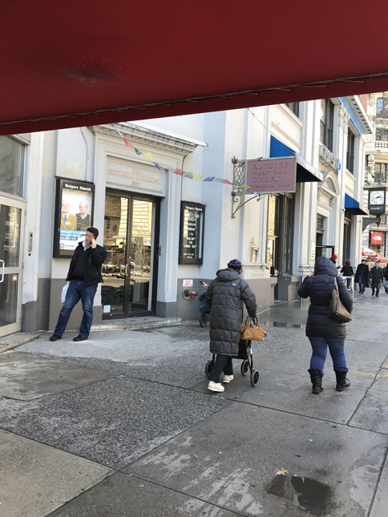

03/17/17 21:38:48 ¶ ● ⬀ ⬈ nonary: nycnostalgia:73rd and Broadway, 1970s Since I knew I would be there today, I wanted to take a picture to compare. Sadly I didn’t get the angle quite right and a lot of the snowfall is melted, but.